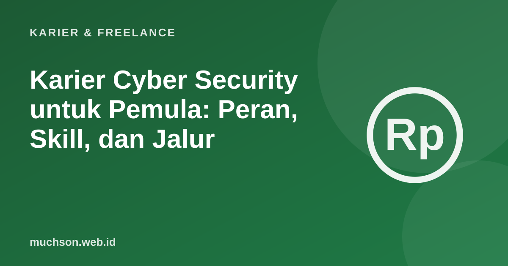

Beranda › Artikel › Karier & Freelance
Karier & FreelanceKarier Cyber Security untuk Pemula: Peran, Skill, dan Jalur
Keamanan siber termasuk keterampilan yang paling cepat tumbuh menurut Future of Jobs Report 2025 WEF. Bagi banyak pemula, bidang ini terdengar identik dengan hacker di film. Kenyataannya jauh lebih beragam: ada yang memantau serangan, mengaudit sistem, menyusun kebijakan, sampai mendidik pengguna. Artikel ini memetakan jalurnya.

Peran-peran di keamanan siber
| Peran | Pekerjaan sehari-hari | Cocok untuk yang suka |
|---|---|---|
| SOC analyst | Memantau peringatan keamanan, menyelidiki aktivitas mencurigakan | Detail, investigasi |
| Penetration tester | Menguji keamanan sistem dengan izin, mencari celah | Memecahkan teka-teki teknis |
| Incident responder | Menangani serangan yang sedang terjadi dan pemulihan | Bekerja di bawah tekanan |
| Security engineer | Merancang dan membangun sistem yang aman | Membangun dan mengotomatiskan |
| GRC (tata kelola, risiko, kepatuhan) | Kebijakan, audit, kepatuhan regulasi seperti UU PDP | Dokumen, regulasi, komunikasi |
| Security awareness | Melatih karyawan mengenali phishing dan praktik aman | Mengajar dan komunikasi |
Kerangka NICE dari NIST di Amerika Serikat memetakan puluhan peran kerja keamanan siber beserta pengetahuan dan keterampilannya. Ini sumber yang baik untuk melihat betapa luasnya bidang ini.
Fondasi yang perlu dikuasai
Banyak orang ingin langsung belajar "hacking". Tanpa pemahaman jaringan dan sistem operasi, alat-alat keamanan hanya akan menjadi tombol yang tidak dipahami. Fondasi membuat kemajuan berikutnya jauh lebih cepat.
Etika dan hukum: wajib dipahami sejak awal
Menguji keamanan sistem milik orang lain tanpa izin tertulis adalah pelanggaran hukum, termasuk di Indonesia menurut Undang-Undang Informasi dan Transaksi Elektronik. Berlatihlah hanya di lingkungan yang memang disediakan untuk latihan, di laboratorium milik sendiri, atau dalam program yang mengizinkan pengujian (bug bounty dengan aturan jelas).
| Tempat latihan legal | Keterangan |
|---|---|
| Platform lab daring | Mesin latihan yang sengaja dibuat rentan, misalnya TryHackMe atau Hack The Box |
| Lab sendiri | Mesin virtual di laptop Anda, termasuk aplikasi latihan seperti OWASP Juice Shop |
| Kompetisi CTF | Capture The Flag, banyak diadakan kampus dan komunitas |
| Program bug bounty | Pengujian dengan izin dan aturan cakupan yang jelas |
Rencana belajar 6 bulan
Sertifikasi tingkat pemula
Sertifikasi bukan syarat mutlak, tetapi membantu lolos penyaringan awal. Beberapa yang sering disebut untuk pemula antara lain ISC2 Certified in Cybersecurity (CC) dan CompTIA Security+. Di Indonesia, juga tersedia skema sertifikasi kompetensi keamanan informasi melalui lembaga sertifikasi profesi. Pilih berdasarkan peran yang dituju dan permintaan di lowongan yang Anda incar.
Tanya jawab
Apakah harus jago coding untuk masuk cyber security?
Peran cyber security apa yang cocok untuk pemula?
Apakah belajar hacking itu legal?
Sertifikasi apa untuk pemula?
Sumber dan bacaan lanjut
- NIST: NICE Framework Resource Center
- OWASP Top Ten
- OWASP Juice Shop
- Badan Siber dan Sandi Negara (BSSN)
- World Economic Forum: The Future of Jobs Report 2025